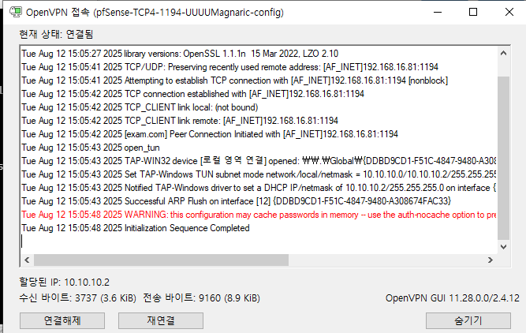

안녕하세요! 👋
저는 이혜원입니다. 이 페이지는 저의 보안 기술 역량을 담은 포트폴리오입니다. 가상 네트워크 환경 구축부터 침입 탐지 시스템(HIDS/NIDS), 모니터링 시스템 구현 등 다양한 프로젝트를 확인하실 수 있습니다. 각 프로젝트 카드를 클릭하면 상세한 구축 과정과 결과 이미지를 볼 수 있습니다.
PROJECTS

GNS3 네트워크 토폴로지
HIDS - OSSEC

Zabbix 모니터링 시스템

pfsense 방화벽 및 OpenVPN

NIDS - Snort

NIDS - Suricata